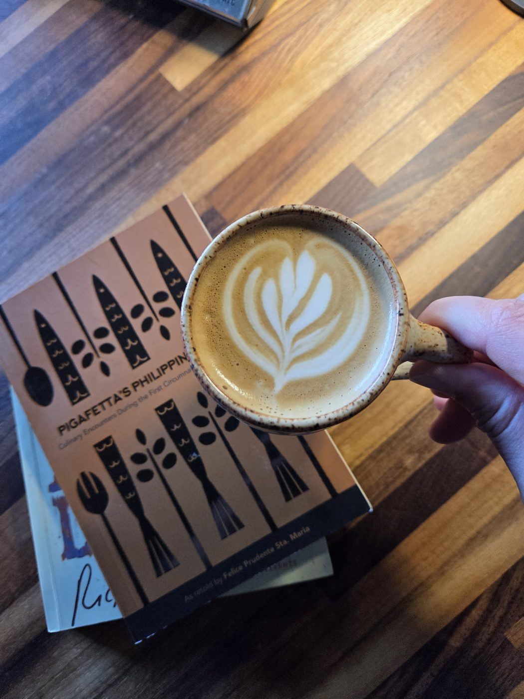
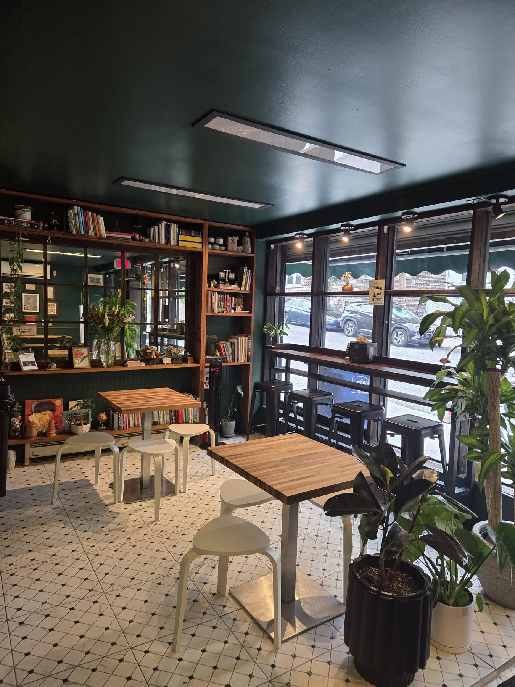
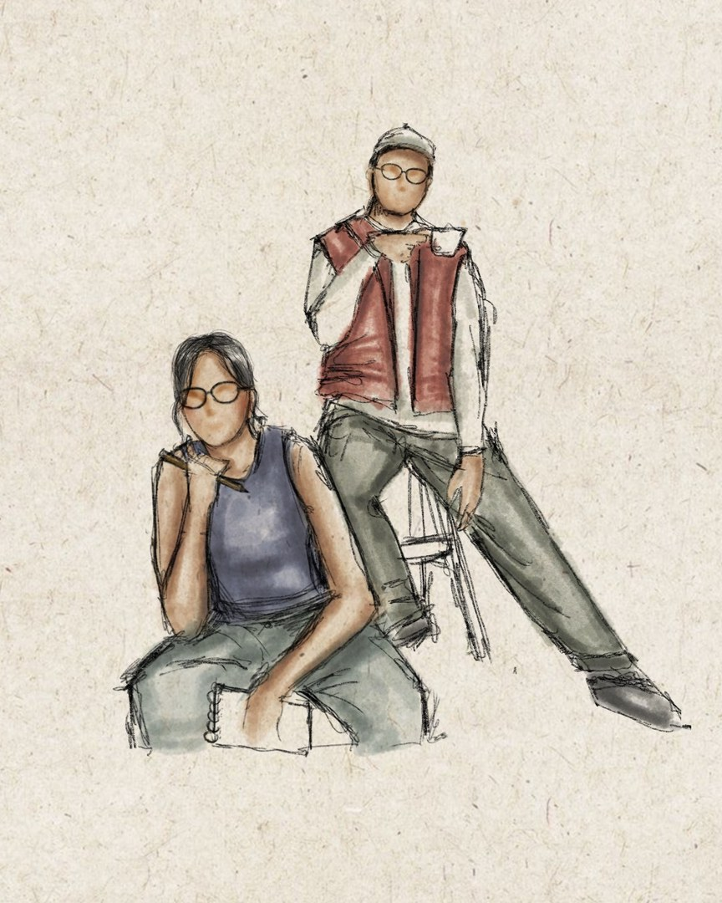
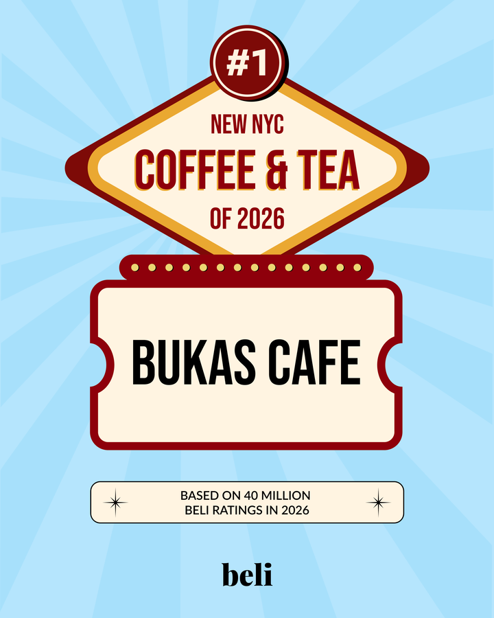

Signature Latte
Bukas Na
Bukas syrup, salted cream and tultul salt — inspired by Anna's favorite childhood Butterball candy. Sweet meets salty.


Salted-cream ube lattes, kalamansi pastries, and adobo melts — served in a jade-walled corner that feels like coffee at a friend's place.

Bukas Cafe is the love project of Anna Javier and Angel Carreon, partners of eleven years and Elmhurst locals. They dreamed of opening a cafe back in the Philippines — then the corner space on Van Horn St. opened up, and Queens felt like the right new beginning.
Every drink and dish is rooted in what they grew up eating, made progressive for everyone to experience. The pimiento spread comes from Angel's aunt. The Bukas Na latte is built around a childhood candy Anna loved. The creams and jams are all made in-house.
Step inside and you'll find jade walls, lush plants, shelves of books, and two owners who'll learn your name — a neighborhood spot that feels like family.
Follow the journey
Packed on weekends — locals line up Saturdays for the adobo melts. Worth the wait.
★ Write a review"The Bukas na latte is perfectly creamy and sweet without overpowering the coffee."
— Google review"Cute interiors, friendly staff who remember your name. A lovely neighborhood spot."
— Google review"Artisanal salt sprinkles make the coffee pop."
— The InfatuationKind words from the writers and neighbors spreading the word about progressive Filipino coffee in Elmhurst.

Ranked first among New York City's new coffee & tea spots on Beli, based on 40 million ratings.
"That little savory touch makes the drinks pop — plus it's just fun to see something that looks like a dinosaur egg going into your caffeine."Read the review →
"Bukas Cafe serves Filipino dishes with a modern twist… the food is very Filipino, but progressive."Read the feature →
New drops, latte art, weekend specials and behind-the-counter moments — the freshest Bukas news lives on Instagram first.
Follow on Instagram| Monday | Closed |
| Tuesday | Closed |
| Wed – Sun | 9:00a – 3:00p |
We're dreaming up late-night hours and a dinner menu. Join the list and be first in line — plus the occasional regular-only perk.